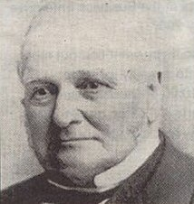

David Spencer David Spencer, the son of a ribbon manufacturer, was born in Foleshill Coventry on 19th November 1805. After his schooldays spent at a small private school he was apprenticed to William Browett, a general draper who owned a shop in Cross Cheaping. Two years after serving his time Mr Spencer set up his own business in Hay Lane with capital of £30. He was keen, extremely honest and his courtesy to his customers was legendary. His business flourished. Over the years he gradually discarded the drapery side of the business and concentrated on woollen goods and carpets. He was a man of strong religious beliefs and a Congregationalist and throughout his life he was involved with charitable institutions, the Provident Dispensary, Philanthropic Societies, the Coventry and Warwickshire Hospital and so on, but it was in connection with the youth of the city that he was most interested. He gave land and money to establish a technical institute in two vacant ribbon factories in Earl Street. The Technical Institute was opened in 1887 and later became Coventry Technical College. Towards the end of May 1888 Mr Spencer suffered a severe stroke and died a few days later at his home in Warwick Row. His wife Tabitha had died just the year before. They never had any children and an adopted daughter who took his name, herself died childless. His funeral at London Road Cemetery was attended by thousands of mourning Coventry people, so many of who had benefited from his generosity. At the time of his death at the age of 82, he was said to be earning £10,000 a year. In his will he left £250,000 which was a fortune and apparently surprised many. After legacies of some £75,000 to his family members and friends, the bulk of his considerable fortune was left to charities, one or two of which still benefit today. £20,000 was left in trust as the Spencer Industrial Arts Trust. The trust paid for most of a considerable extension to the Technical Institute in 1894 and created a scholarship in 1908 to be awarded to pupils of the institution. A second scheme in 1924 created another Spencer scholarship. Warwick Road Congregational chapel replaced the chapel in Vicar Lane and was built between 1889 and 1891 with the aid of a legacy from David Spencer, of £1,000 He also directed in his will that John Anslow, who had been one of his assistants for many years should, if he so wished be allowed to buy the business for £2,500. ‘Anslow’s, was to become a local Coventry institution. David Spencer has given his name to two Earlsdon Roads but it was for his generous gift of Spencer Park that he is best known. The park was created from his gift of land in 1852 and was formally opened in 1883. |